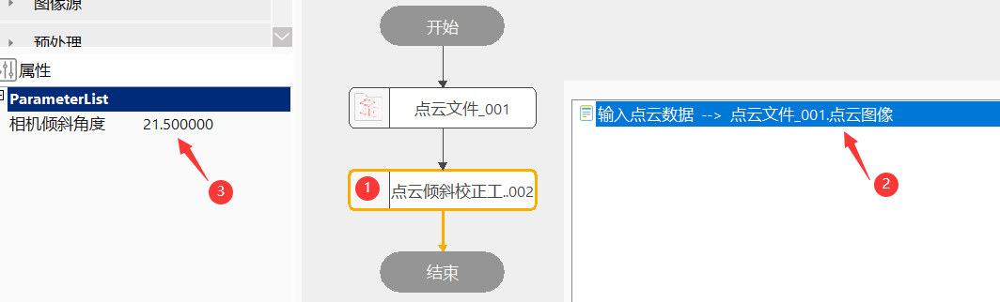

点云倾斜校正工具适用于3D测量、检测等场景，点云倾斜校正工具主要根据输入点云和相机安装角度进行倾斜校正功能。
在3D测量中，点云倾斜应用较为广泛，如由于产品或安装空间原因，相机以固定角度倾斜安装，拍摄的点云图像需要校正后再进行相应的测量的项目，即倾斜校正工具后的点云图像相当于相机水平安装拍摄的图像效果。
step1：添加点云文件、点云倾斜校正工具，如图3-1所示；
step2：并双击打开工具参数链，链接点云文件；
step3：属性栏输入相机倾斜角度，然后点击运行即可得到倾斜校正后的点云数据；

| 参数名称 | 参数描述 |
|---|---|
| 输入点云数据 | 输入待校正的点云图像 |
| 参数名称 | 参数描述 |
|---|---|
| 相机安装角度 | 倾斜校正的角度，参数范围[-360,360] |
| 参数名称 | 参数描述 |
|---|---|
| 输出点云数据 | 输出倾斜校正后的数据，用于测量 |
| 参数名称 | 参数描述 |
|---|---|
| 输出点云数据 | 输出倾斜校正后的数据，用于测量 |
| 执行时间 | 工具执行时间 |
| 执行结果 | 工具执行结果 |
参见“\Samples\3D\点云\点云倾斜校正工具.gvp”。